토목기사 (2009-08-30 기출문제)
1과목: 응용역학
1. 그림과 같은 원형 및 정사각형 관이 재료로서 관의 두께(t) 및 둘레(4b=2πr)가 동일하고, 두 관의 길이가 일정할 때 비틀림 T에 의한 두관의 전단응력의 비 (τ(a)/τ(b))는 얼마인가?
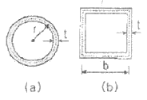
- 0.683
- 0.785
- 0.821
- 0.859
(정답률: 54%)

2. 그림과 같이 C점이 내부힌지로 구성된 게르버보에 대한 설명으로 옳지 않은 것은?
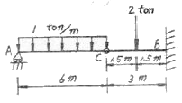
- C점에서의 휨모멘트는 “0”이다.
- C점에서의 전단력은 -2 ton 이다.
- B점에서의 수직반력은 5 ton 이다.
- B점에서의 휨모멘트는 -12 tonㆍm 이다.
(정답률: 56%)
3. 다음과 같은 A점과 B점에 모멘트하중(Mo)이 작용할 때 생기는 전단력도의 모양은 어떤 형태인가?
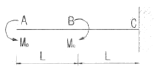
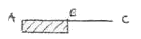
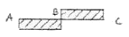
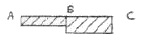
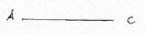
(정답률: 66%)
4. 두 주응력(σz=σy=kg/cm2)이 아래 그림과 같다. 이 면과 θ°=45°를 이루고 있는 면의 응력은?
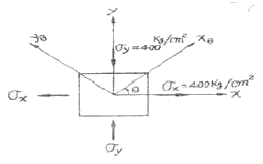
- σθ = 0 kg/cm2, τθ = 0 kg/cm2
- σθ = 800 kg/cm2, τθ = 0 kg/cm2
- σθ = 0 kg/cm2, τθ = 400 kg/cm2
- σθ = 400 kg/cm2, τθ = 400 kg/cm2
(정답률: 61%)
5. 다음 그림과 같은 와렌(warren)트러스에서 부재력이 ‘0(영)’인 부재는 몇 개인가?
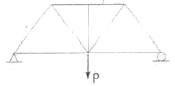
- 0개
- 1개
- 2개
- 3개
(정답률: 66%)
6. 다음은 가상일의 방법을 설명한 것이다. 틀린 것은?
- 트러스의 처짐을 구할 경우 효과적인 방법이다.
- 단위하중법(unit load method)이라고도 한다.
- 처짐이나 처짐각을 계산하는 기하학적 방법이다.
- 에너지보존의 법칙에 근거를 둔 방법이다.
(정답률: 58%)
7. 다음 그림과 같은 T형 단면의 도심축(x-x)에 대한 회전반지름(r)은?
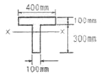
- 116mm
- 136mm
- 156mm
- 176mm
(정답률: 44%)
8. 그림과 같이 길이가 5m이고 휨강도(EI)가 100 tㆍm2인 기둥의 최소 임계하중은?
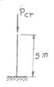
- 8.4t
- 9.9t
- 11.4t
- 12.9t
(정답률: 55%)
9. 다음과 같은 부정정 구조물에서 B지점의 반력의 크기는? (단, 보의 휨강도 EI는 일정하다.)
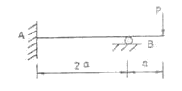
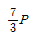
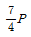
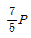
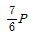
(정답률: 41%)
10. 그림과 같은 단순보의 최대전단응력 τmax를 구하면? (단, 보의 단면은 지름이 D인 원이다.)
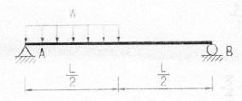
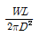
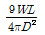
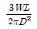
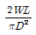
(정답률: 60%)
11. 아치축선이 포물선인 3활절아치가 그림과 가티 등분포하중을 받고 있을 때, 지점 A의 수평반력은?
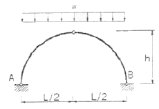
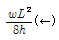
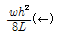
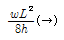
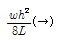
(정답률: 70%)
12. 그림과 같은 3경간 연속보의 B점이 5cm 아래로 침하하고 C점이 3cm 위로 상승하는 변위를 각각 보였을 때 B점의 휨모멘트 MB를 구한 값은? (단, EI=8×1010kg/cm2 로 일정)
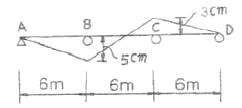
- 3.52×106 (kgㆍcm)
- 4.85×106 (kgㆍcm)
- 5.07×106 (kgㆍcm)
- 5.60×106 (kgㆍcm)
(정답률: 56%)
13. 폭 20cm, 높이 30cm의 단순보가 중앙점에 그림과 같은 집중하중을 받을 때 중앙점 C의 처짐 δ를 구한 값은? (단, E=80,000kgㆍcm2)
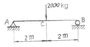
- 1.23 cm
- 0.83 cm
- 0.74 cm
- 0.42 cm
(정답률: 56%)
14. 지름 5cm의 강봉을 8t으로 당길 때 지름은 약 얼마나 줄어 들겠는가? (단, 포아송비 v=0.3, 탄성계수 E=2.1 × 106kgㆍcm2)
- 0.00029 cm
- 0.0⑤7 cm
- 0.000012 cm
- 0.003 cm
(정답률: 50%)
15. 그림과 같은 내민보에서 C점의 휨 모멘트가 영(令)이 되게 하기 위해서는 x가 얼마가 되어야 하는가?
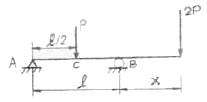
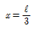
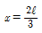
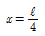
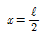
(정답률: 66%)
16. 그림과 같은 장주의 길이가 같을 경우 기둥 (a)의 임계하중이 4t 이라면 기둥(b)의 임계하중은? (단, EI는 일정하다.)
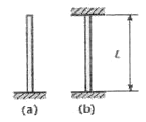
- 4t
- 16t
- 32t
- 64t
(정답률: 71%)
17. 그림과 같은 단순보에서 휨모멘트에 의한 탄성변형에너지는? (단, EI는 일정하다.)
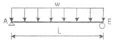
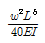
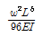
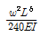
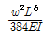
(정답률: 65%)
18. 다음의 부정정 구조물을 모멘트 분뱁법으로 해석하고자 한다. C점이 룰러지점임을 고려한 수정강도계수에 의하여 B점에서 C점으로 분배되는 분배율 fsc를 구하면?
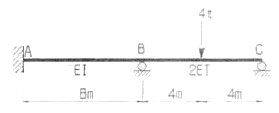
- 1/2
- 3/5
- 4/7
- 5/7
(정답률: 54%)
19. 다음 인장부재의 수직변위를 구하는 식으로 옳은 것은? (단, 탄성계수는 E)
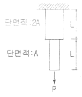
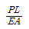
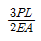
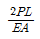
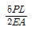
(정답률: 63%)
20. 그림과 같은 구조물의 C점의 연직하중이 작용할 때, AC부재가 받는 힘은?
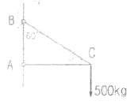
- 250kg
- 500kg
- 866kg
- 1000kg
(정답률: 51%)
2과목: 측량학
21. 다음과 같은 단면에서 절토단면적은 얼마인가?
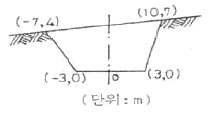
- 141m2
- 122m2
- 61m2
- 57m2
(정답률: 48%)
22. 우리나라의 노선측량에서 일반철도에 주로 이용되는 완화곡선은?
- 2차 포물선
- 3차 포물선
- 렘니스케이트(lemniscate)
- 클로소이드(clothoid)
(정답률: 52%)
23. 두 지점의 거리측량 결과가 다음과 같을 때 최확값은?
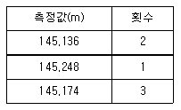
- 145.136m
- 145.248m
- 145.174m
- 145.204m
(정답률: 52%)
24. 노선 측량의 일반적 작업 순서로서 옳은 것은? (단, A:종ㆍ횡단측량, B:중심측량, C:공사측량, D:답사)
- A→ B→ D→ C
- D→ B→ A→ C
- D→ C→ A→ B
- A→ C→ D→ B
(정답률: 73%)
25. 항공사진의 표정작업 중 사진의 축척, 경사를 조정하고 위치를 결정하는 표정은?
- 접합표정
- 절대표정
- 상호표정
- 내부표정
(정답률: 64%)
26. 트래버스 측량에서 선점시 주의하여야 할 사항이 아닌 것은?
- 트래버스의 노선은 가능한 폐합 또는 결합이 되게 한다.
- 결합 트래버스의 출발점과 결합점간의 거리는 가능한 단거리로 한다.
- 거리측량과 각측량의 정확도가 균형을 이루게 한다.
- 측정간 거리는 다양하게 선점하여 부정오차를 소거 한다.
(정답률: 58%)
27. 다음 등고선에서 AB 사이의 수평거리가 60m이면 AB의 경사는?
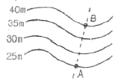
- 10%
- 15%
- 20%
- 25%
(정답률: 38%)
28. 그림과 같은 삼각망에서 만족하여야 할 조건식이 아닌 것은?
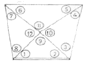
- ①+②+⑨-180°=0
- [①+②]-[⑤+⑥]=0
- ⑨+⑩+⑪+⑫-360°=0
- ①+②+③+④+⑤+⑥+⑦+⑧-360°=0
(정답률: 64%)
29. 노선측량에 관한 설명 중 잘못된 것은?
- 노선측량이란 수평곡선, 종곡선, 완화곡선 등을 계산하고 측설하는 측량이다.
- 곡률이 곡선 길이에 반비례하는 곡선을 클로소이드 곡선이라 한다.
- 완화곡선에 연한 곡선반지름의 감소율은 캔트의 증가율과 같다.
- 완화곡선의 반지름은 시점에서 무한대이고 종점에서는 원곡선의 반지름이 된다.
(정답률: 56%)
30. 대단위 신도시를 건설하기 위한 넓은 지형의 정지공사에서 토량을 계산하고자 할 때 가장 적당한 방법은?
- 점고법
- 양단면 평균법
- 비례 중앙법
- 각주공식에 위한 방법
(정답률: 75%)
31. 노선측량에서 단곡선 설치시 필요한 교각 I=95° 30' 곡선 반지름 R=300m 일 때 장현(long chord:L)은?
- 222.065m
- 298.619m
- 444.131m
- 597.238m
(정답률: 47%)
32. 직접법으로 등고선을 측정하기 위하여 A점에 평판을 세우고 기계 높이 1.5m를 얻었다. 점 P에 표척(staff)을 세워 2.68m를 얻었다면 점 P의 등고선은 몇 m 인가? (단, A점의 표고는 71.6m임)
- 69.12m
- 70.12m
- 70.42m
- 70.95m
(정답률: 63%)
33. 비행고도 5000m에서 촬영한 2매의 연속사진의 주점기선장이 70mm일 때 등고선 간격 10m에 해당되는 시차차는?
- 0.14mm
- 0.28mm
- 0.34mm
- 0.44mm
(정답률: 48%)
34. 직사각형의 가로, 세로가 그림과 같다. 면적 A를 가장 적절히(오차론적으로) 표현한 것은?
- 7500.9m2 ± 0.30m2
- 7500m2 ± 0.41m2
- 7500.9m2 ± 0.60m2
- 7500m2 ± 0.67m2
(정답률: 67%)
35. 레벨로부터 60m 떨어진 표척을 기준한 값이 1.258m 이며 이때 기포가 1 눈금 편위되어 있었다. 이것을 바로 잡고 다시 시준하여 1.267m를 읽었다면 기포의 감도는?
- 25“
- 27“
- 29“
- 31“
(정답률: 31%)
36. 하천측량에서 평면측량의 일반저긴 측량 범위로 가장 적합한 것은?
- 유제부에서 제외지를 제외한 제내지 300m 이내, 무제부에서는 홍수가 영향을 주는 구역보다 약간 좁게 한다.
- 유제부에서 제외지 및 제내지 300m 이내, 무제부에서는 홍수가 영향을 주는 구역보다 약간 넓게 한다.
- 유제부에서 제외지를 제외한 제내지 20m 이내, 무제부에서는 홍수가 영향을 주는 구역보다 약간 좁게 한다.
- 유제부에서 제외지를 제외한 제내지 20m 이내, 무제부에서는 홍수가 영향을 주는 구역보다 약간 넓게 한다.
(정답률: 60%)
37. 교호 수준 측량을 하여 다음과 같은 결과를 얻었다. A점의 표고가 120.564m이면 B점의 표고는?
- 120.759m
- 120.672m
- 120.524m
- 120.328m
(정답률: 46%)
38. 다음의 설명 중 틀린 것은?
- 적도를 기준으로 수평면상에서 동쪽으로 돌아가며 잰 각을 방위각이라 한다.
- 평면 직교좌표의 X축을 기준으로 하여 오른쪽으로 관측한 각을 방향각이라 한다.
- 방위각과 방향각은 좌표원점에서 일치하며 원점에서 멀어질수록 그 차이가 커진다.
- 자오선수차는 진북방향각과 절대값이 같다.
(정답률: 35%)
39. 전진법(前進法)에 의하여 6각형이 토지를 측정하였다. 측점 A를 출발하여 B, C, D, E, F, A로 돌아 왓을 때 폐합오차가 30cm이었다면 측점 D의 오차 분배량은? (단, AB=60m, BC=40m, CD=30m, DE=50m, EF=20m, FA=50m)
- 7.2m
- 12.0m
- 15.6m
- 21.6m
(정답률: 50%)
40. 배각법에 의한 각 관측 방법에 대한 설명 중 잘못된 것은?
- 방향각법에 비해 읽기 오차의 영향이 적다.
- 많은 방향이 있는 경우는 적합하지 않다.
- 눈금의 불량에 의한 오차를 최소로 하기 위하여 n회의 반복 경과가 360°에 가깝게 해야 한다.
- 내축과 외축의 연직선에 대한 불일치에 의한 오차가 자동 소거된다.
(정답률: 55%)
3과목: 수리학 및 수문학
41. 오리피스의 수두차가 최대 4.9m이고 오리피스의 유량계수가 0.5일 때 오리피스의 유량은? (단, 오리피스의 단면적은 0.01m2이다.)
- 0.025m3/sec
- 0.049m3/sec
- 0.098m3/sec
- 0.196m3/sec
(정답률: 73%)
42. 관수로에서 동수경사선에 대한 설명으로 옳은 것은?
- 수평기준선에서 손실수두와 속도수두를 더한 수두선이다.
- 관로중심선에서 압력수두와 속도수두를 더한 수두선이다.
- 전수두에서 손실수두를 제외한 수두선이다.
- 에너지선에서 속도수두를 제외한 수두선이다.
(정답률: 46%)
43. 직경 10cm인 연직관 속에 높이 2m만큼 모래가 들어있다. 모래면 위의 수위를 20cm로 일정하게 유지 시켰더니 투수량 Q=3L/hr 이였다. 이 때 모래의 투수계수 k는?
- 0.382 m/hr
- 0.637 m/hr
- 3.82 m/hr
- 6.37 m/hr
(정답률: 36%)
44. 폭이 넓은 직4각형 수로에서 폭 1m당 0.5m3/sec의 유량이 80cm의 수심으로 흐르는 경우 이흐름은? (단, 동점성 계수는 0..012cm2/sec, 한계수심은 29.5cm이다.)
- 층류이며 상류
- 층류이며 사류
- 난류이며 상류
- 난류이며 사류
(정답률: 35%)
45. 오리피스(orifice)에서의 유량 Q를 계산할 때 수두 H의 측정에 1%의 오차가 있으면 유량계산의 결과에는 얼마의 오차가 생기는가?
- 0.1%
- 0.5%
- 1%
- 2%
(정답률: 55%)
46. 지름 4cm의 원형단면 관에서 물의 흐름이 그림과 같이 구부러질 때 곡면을 지지하는데 필요한 힘은 Px는? (단, 흐름의 속도가 15m/sec이고 마찰을 무시한다.)
- -0.0106t
- 0.0106t
- 11.106t
- -1.1106t
(정답률: 47%)
47. 다음 설명 중 옳지 않은 것은?
- 유량빈도곡선의 경사가 급하면 홍수가 드물고 지하수의 하천방출이 크다.
- 수위-유량 관계곡선의 연장방법인 Stevens법은 Chezy의 유속공식을 이용한다.
- 자연하천에서 대부분 동일수위에 대한 수위 상승시와 하강시의 유량이 다르다.
- 합리식은 어떤 배수영역에 발생한 호우강도와 첨두유량간 관계를 나타낸다.
(정답률: 33%)
48. 지하의 사질 여과층에서 수두 차가 0.4m이고 투과거리가 3.0m일 때에 이곳을 통과하는 지하수의 유속은? (단, 투수계수는 0.2cm/sec이다.)
- 0.0135cm/sec
- 0.0267cm/sec
- 0.0324cm/sec
- 0.0417cm/sec
(정답률: 62%)
49. 다음 표와 같이 40분간 집중홍수가 계속되었다면 지속기간 20분인 최대강우 강도는?
- I=49mm/hr
- I=59mm/hr
- I=69mm/hr
- I=72mm/hr
(정답률: 69%)
50. 중량이 600kg, 비중이 3.0인 물체를 물(담수)속에 넣었을 때 물 속에서의 중량은?
- 100kg
- 200kg
- 300kg
- 400kg
(정답률: 53%)
51. 유역 내 5개 강우량 관측점에 기록된 강우량과 지배면적 이 표화 같을 때 Thiessen 법으로 계산된 유역 평균 강우량은 얼마인가?
- 31.0mm
- 30.0mm
- 29.0mm
- 28.0mm
(정답률: 50%)
52. 유체의 밀도(ρ), 점성계수(μ), 벽면의 마찰력(τ0), 평균유속(V) 마찰속도 (u.)의 관계식으로 옳은 것은?
(정답률: 57%)
53. SCS의 초과강우량 산정방법에 대한 설명 중 옳지 않은 것은?
- 유역의 토지이용형태는 유효우량의 크기에 영향을 미친다.
- 유출곡선지수(runoff curve number)는 총 우량으로부터 유효유량의 잠재력을 표시하는 지수이다.
- 투수성 지역의 유출곡선지수는 불투수성 지역의 유출곡선지수보다 큰 값을 갖는다.
- 선행토양함수조건(antecedent soil moisture condition)은 1년을 성수기와 비성수기로 나누어 각 경우에 대하여 3가지 조건으로 구분하고 있다.
(정답률: 52%)
54. 광폭의 직4각형 단면 수로에서 최소 비에너지가 3m 일 때 한계수신은 얼마인가?
- 0.3m
- 1m
- 2m
- 3m
(정답률: 54%)
55. 개수로의 흐름에 가장 지배적인 영향을 미치는 것은?
- 유체의 밀도
- 관성력
- 중력
- 점성력
(정답률: 43%)
56. 정수압의 이론은 다음 중 어느 경우에 적용되는가?
- 유체가 전혀 움직이지 않을 때에 한하여 적용된다.
- 유체가 움직여도 좋으나 유체입자 상호간의 상대적인 움직임이 없을 때 적용된다.
- 유체의 흐름 상태에는 관계없이 적용할 수 있다.
- 층류(laminar flow)에 한하여 적용할 수 있다.
(정답률: 34%)
57. 1시간 간격의 강우량이 12.6mm, 23.3mm, 18.3mm, 5.7mm이다. 지표유출량이 38mm일 때 ∅-index는?
- 3.34mm/hr
- 4.72mm/hr
- 5.47mm/hr
- 6.91mm/hr
(정답률: 54%)
58. 레이놀즈(Reynolds)수에 대한 설명으로 틀린 것은?
- 레이놀즈 수에 의해 흐름상태는 층류, 천이영역, 난류로 분류할 수 있다.
- 2.000보다 작으면 층류가 된다.
- 중력에 대한 관성력의 비를 나타낸다.
- 무차원의 수로 흐름상태를 구분하는 지표가 된다.
(정답률: 50%)
59. 베르누이(Bernoulli)정리의 적용조건이 아닌 것은?
- 임의의 두 범은 같은 유선 위에 있다.
- 정상상태의 흐름이다.
- 점성 유체이다.
- 비압축성 유체의 흐름이다.
(정답률: 40%)
60. 한계수심에 대한 설명으로 옳지 않은 것은?
- 유량이 일정할 때 한계수심에서 비에너지가 최소가 된다.
- 한계수심보다 수심이 작은 흐름이 상류이고 큰 흐름이 사류이다.
- 비에너지가 일정하면 한계수심으로 흐를 때 유량이 최대가 된다.
- 유량이 일정할 때 한계수심에서 비력이 최소가 된다.
(정답률: 46%)
4과목: 철근콘크리트 및 강구조
61. 그림과 같은 용접부의 응력은?
- 115 MPa
- 110 MPa
- 100 MPa
- 94 MPa
(정답률: 61%)
62. 그림과 같은 복철근 보의 유효깊이는? (단, 철근 1개의 단면적은 250mm2 이다.)
- 810mm
- 780mm
- 770mm
- 730mm
(정답률: 43%)
63. b=350 mm, d=550mm인 직사각형 단면의 보에서 지속하중에 의한 순간처짐이 16mm였다. 1년 후 총 처짐량은 얼마인가? (단, As=2246mm2, Ag=1284mm2, ζ=1.4)
- 20.5mm
- 32.8mm
- 42.1mm
- 26.5mm
(정답률: 60%)
64. 2방향 슬래브 설계시 직접설계법을 적용할 수 있는 제한사항에 대한 설명 중 틀린 것은?
- 각 방향으로 3경간 이상이 연속되어야 한다.
- 모든 하중은 연직하중으로서 슬래브판 전체에 등분포되어야 하며, 활하중은 고정하중의 3배 이하이어야 한다.
- 연속한 기둥 중심선으로부터 기둥의 이탈은 이탈방향 경간의 최대 10%까지 허용할 수 있다.
- 각 방향으로 연속한 받침부 중심간 경간 길이의 차이는 긴 경간의 1/3 이하이어야 한다.
(정답률: 37%)
65. 철근콘크리트 깊은 보에 대한 전단설계 방법 중 잘못된 것은?
- 깊은 보는 비선형 변형률분포를 고려하여 설계하거나 스트릿-타이 모델에 의하여 설계하여야 한다.
- 수직전단철근의 간격은 d/5 이하 또는 300 mm 이하로 하여야 한다.
- 깊은 보의 Vn은 이하 이어야 한다.
- 깊은 보에서 수직전단철근이 수평전단철근 보다 전단보강 효과가 더 크다.
(정답률: 28%)
66. 인장 이형철근의 정착길이 산정시 필요한 보정계수에 대한 설명 중 틀린 것은? (단, fsp는 콘크리트의 쪼갬인장강도)
- 상부철근(정착길이 또는 겹침이음부 아래 300mm를 초과되게 굳지 않은 콘크리트를 친 수평철근)인 경우, 철근배근 위치에 따른 보정계수 1.3을 사용한다.
- 에폭시 도막철근인 경우, 피복두께 및 순간격에 따라 1.2나 2.0의 보정계수를 사용한다.
- fsp가 주어지지 않은 경량콘크리트인 경우, 1.3의 보정계수를 사용한다.
- 에폭시 도막철근이 상부철근인 경우, 보정계수끼리 곱한 값이 1.7보다 클 필요는 없다.
(정답률: 39%)
67. 그림에 나타난 직사각형 단철근 보가 공칭 휨강도 Mp에 도달할 때 인장철근의 변형률은 얼마인가? (철근 D22 4개의 단면적 1548mm2, fck=28MPa, fy=350MPa)
- 0.003
- 0.0⑤
- 0.010
- 0.012
(정답률: 30%)
68. fck=35MPa, fy=350MPa을 사용하고 bn=500mm, d=1000mm인 휨을 받는 직사각형 단면에 요구되는 최소 휨철근량은 얼마인가?
- 1524mm2
- 1745mm2
- 2000mm2
- 2113mm2
(정답률: 48%)
69. P=300kN의 인장응력이 작용하는 판두께 10mm인 철판에 ∅19mm인 리벳을 사용하여 접합 할 때의 소요 리벳 수는? (단, 허용전단응력 = 110MPa, 허용지압응력 = 220MPa_
- 8개
- 10개
- 12개
- 14개
(정답률: 34%)
70. 주어진 T형 단면에서 전단에 대해 위험단면에서 Vud/Mu=0.28 이었다. 휨철근 인장강도의 40% 이상의 유효 프리스트레스트 힘이 작용할 때 콘크리트의 공칭전단강도(Vo)는 얼마인가? (단, fck=45MPa, Vu:계수전단력, Mu:계수휨모멘트 d:압축측 표면에서 긴장재 도심까지의 거리)
- 185.7kN
- 230.5kN
- 321.7kN
- 462.7kN
(정답률: 42%)
71. 그림과 같은 T형보에서 응력사각형의 깊이 a는? (단, fck=21MPa, fy=300MPa, As=4020mm2이다.)
- 68mm
- 82mm
- 94mm
- 109mm
(정답률: 53%)
72. 다음 주어진 단철근 직사각형 단면이 연성파괴를 한다면 이 단면의 공칭휨강도는 얼마인가? (단, fck=21MPa, fy=300MPa)
- 252.4 kNㆍm
- 296.9 kNㆍm
- 356.3 kNㆍm
- 396.9 kNㆍm
(정답률: 58%)
73. 콘크리트 구조설계기준에서는 띠철근으로 보강된 기둥에 대해서는 감소계수 ∅=0.65, 나선철근으로 보강된 기둥에 대해서는 ∅=0.70을 적용한다. 그 이유에 대한 설명으로 가장 적당한 것은?
- 콘크리트의 압축강도 측정시 공시체의 형태가 원령이기 때문이다.
- 나선철근으로 보강된 기둥이 띠철근으로 보강된 기둥보다 연성이나 인성이 크기 때문이다.
- 나선철근으로 보강된 기둥은 띠철근으로 보강된 기둥보다 골재분리현상이 적기 때문이다.
- 같은 조건(콘크리트단면적, 철근단면적)에서 사각형(띠철근) 기둥이 원형(나선철근)기둥보다 큰 하중을 견딜수 있기 때문이다.
(정답률: 62%)
74. 아래 그림과 같은 보에서 계수전단력 Vu=225kN에 대한 가장 적당한 스터럽간격은? (단, 사용된 스터럽은 철근 D13이다. 철근 D13의 단면적은 127mm2, fck=24MPa, fy=350MPa이다.)
- 110mm
- 150mm
- 210mm
- 225mm
(정답률: 55%)
75. 철근콘크리트가 성립하는 이유에 대한 설명으로 잘못된것은?
- 철근과 콘크리트와의 부착력이 크다.
- 콘크리트 속에 묻힌 철근은 녹슬지 않고 내구성을 갖는다.
- 철근과 콘크리트의 무게가 거의 같고 내구성이 같다.
- 철근과 콘크리트는 열에 대한 팽창계수가 거의 같다.
(정답률: 55%)
76. 철근콘크리트 부재의 최소 피복두께에 관한 설명 중 틀린 것은?
- 흙의 접하거나 옥외의 공기에 직접 노출되는 현장치기 콘크리트로 D25 이하의 철근을 사용하는 경우 최소 피복두께는 50mm이다.
- 옥외의 공기나 흙에 직접 접하지 않는 현장치기 콘크리트로 슬래브에 D35 이하의 철근을 사용하는 경우 최소 피복두께는 20mm이다.
- 흙에 접하거나 옥외의 공기에 직접 노출되는 프리캐스트 콘크리트로 벽체에 D35이하의 철근을 사용하는 경우 최소 피복두께는 40mm이다.
- 흙에 접하거나 옥외의 공기에 직접 노출되는 프리스트레스트 콘크리트로 벽체인 경우 최소 피복두께는 30mm이다.
(정답률: 37%)
77. T형 PSC보에 설계하중을 작용시킨 결과 보의 처짐은 0이었으며, 프리스트레스 도입단계부터 부착된 계측장치로부터 상부 탄성변형률 ∊=3.5×10-4을 얻었다. 콘크리트 탄성계수 Ec=26000MPa, T형보의 단면적 Ag=150000mm2, 유효율 R=0.85일 때, 강재의 초기 긴장력 P1를 구하면?
- 1606kN
- 1365kN
- 1160kN
- 2269kN
(정답률: 40%)
78. 콘크리트의 설계기준강도(fck)가 35MPa이며 철근의 설계항복강도가 400MPa이면 직경이 25mm인 압축 이형철근의 기본정착길이 (Idb)는 얼마인가?
- 227mm
- 358mm
- 423mm
- 430mm
(정답률: 42%)
79. 옹벽의 토압 및 설계일반에 대한 설명 중 옳지 않은 것은?
- 활동에 대한 저항력은 옹벽에 작용하는 수평력의 1.5배 이상이어야 한다.
- 뒷부벽식 옹벽의 저판은 정밀한 해석이 사용되지 않는 한, 3변 지지된 2방향 슬래브로 설계하여야 한다.
- 뒷부벽은 T형보로 설계하여야 하며, 앞부벽은 직사각형보로 설계하여야 한다.
- 지반에 유발되는 최대 지반반력이 지반의 허용지지력을 초과하지 않아야 한다.
(정답률: 38%)
80. 콘크리트구조물에서 비틀림에 대한 설계를 하려고 할 때 계수비틀림모멘트를 계산하는 방법에 대한 다음 설명 중 잘못된 것은? (단, d는 유효깊이)
- 균열에 의하여 내력의 재분배가 발생하여 비틀림모멘트가 감소할 수 있는 부정정구조물의경우 최대 계수비틀림모멘트를 감소시킬 수 있다.
- 철근콘크리트 부재에서 받침부로부터 d 이내에서 집중된 비틀림모멘트가 작용하면 위험단면은 받침부의 내부 면으로 하여야 한다.
- 프리스트레스트 부재에서 받침부로부터 d 이내에 위피한 단면은 d에서 계산된 계수비틀림모멘트보다 작지 않은 비틀림모멘트에 대하여 설계하여야 한다.
- 정밀한 해석을 수행하지 않은 경우, 슬래브로부터 전달되는 비틀림 하중은 전체 부재에 걸쳐 균등하게 분포하는 것으로 가정할 수 있다.
(정답률: 62%)
5과목: 토질 및 기초
81. 두께 5m의 점토층을 90% 압밀하는데 50일이 걸렸다. 같은 조건하에서 10m의 점토층을 90% 압밀하는데 걸리는 시간은?
- 100일
- 160일
- 200일
- 240일
(정답률: 52%)
82. 어떤 흙 1200g(함수비 20%)과 흙 2600g(함수비 30%)을 섞으면 그 흙의 함수비는 약 얼마인가?
- 21.1%
- 25.0%
- 26.7%
- 29.5%
(정답률: 52%)
83. 토질 종류에 따른 다짐 곡선을 설명항 것 중 옳지 않은 것은?
- 조립토가 세립토에 비하여 최대건조단위 중량이 크게 나타나고 최적함수비는 작게 나타난다.
- 조립토에서는 입도분포가 양호할수록 최대건조단위 중량은 크고 최적함수비는 작다.
- 조립토 일수록 다짐 곡선은 완만하고 세립토 일수록 다짐 곡선은 급하게 나타난다.
- 점성토에서는 소성이 클수록 최대건조단위 중량은 감소하고 최적함수비는 증가한다.
(정답률: 43%)
84. 그림에서 안전율 3을 고려하는 경우, 수두차 h를 최소 얼마로 높일 때 모래시료에 분사현상이 발생하겠는가?
- 12.75cm
- 9.75cm
- 4.25cm
- 3.25cm
(정답률: 47%)
85. 현장에서 다짐된 사질토의 상대다짐도가 95%이고 최대 및 최소 건조단위중량이 각각 1.76t/m3, 1.5t/m3이라고 할 때 현장시료의 건조단위중량과 상대밀도는? (순서대로 건조단위중량/상대밀도)
- 1.67t/m3 / 71%
- 1.67t/m3 / 69%
- 1.63t/m3 / 69%
- 1.63t/m3 / 71%
(정답률: 57%)
86. 깊은기초에 대한 설명으로 틀린 것은?
- 점토지반 말뚝기초의 주면마찰 저항을 산정하는 방법에는 α, β, λ방법이 있다.
- 사질토에서 말뚝의 선단지지력은 깊이에 비례하여 증가 하나 어느 한계에 도달하면 더 이상 증가하지 않고 거의 일정해 진다.
- 무리말뚝의 효율은 1보다 작은 것이 보통이나 느슨한 사질토의 경우에는 1보다 클 수 있다.
- 무리말뚝의 침하량은 동일한 규모의 하중을 받는 외말뚝의 침하량보다 작다.
(정답률: 43%)
87. 다음은 주요한 Sounding(사운딩)의 종류를 나타낸 것이다. 이 가운데 사질토에 가장 적합하고 점성토에서도 쓰이는 조사법은?
- 더치 콘(Dutch Cone) 관입시험기
- 베인 시험기(Vane tester)
- 표준 관입시험기
- 이스키메타(Iskymeter)
(정답률: 59%)
88. Vane Test에서 Vane의 지름 50mm, 높이 10cm, 파괴시 토오크가 59.kgㆍcm일 때 점착력은?
- 1.29kg/cm2
- 1.57kg/cm2
- 2.13kg/cm2
- 2.76kg/cm2
(정답률: 39%)
89. 점착력이 5t/m2, rt=1.8t/m2의 비배수상태(∅=0)인 포화된 점성토 지반에 직경 40cm, 길이 10m의 PHC 말뚝이 항타시공 되었다. 이 말뚝의 선단지지력은 얼마인가? (단, Meyerhof 방법을 사용)
- 1.57 t
- 3.23 t
- 5.65 t
- 45 t
(정답률: 30%)
90. 크기가 30cm×30cm의 평판을 이용하여 사질토위에서 평판재하시험을 실시하고 극한 지지력 20t/m2을 얻었다. 크기가 1.8m×1.8m인 정사각형기초의 총허용하중은 약 얼마인가? (단, 안전률 3을 사용)
- 22ton
- 66ton
- 130ton
- 150ton
(정답률: 40%)
91. 그림과 같은 옹벽배면에 작용하는 토압의 크기를 Rankine의 토압공식으로 구하면?
- 3.2t/m
- 3.7t/m
- 4.7t/m
- 5.2t/m
(정답률: 50%)
92. 내부마찰각 ∅u=0, 점착력 Cu=4.5t/m2, 단위중량이 1.9t/m3되는 포화된 점토층에 경사각 45°로 높이 8m인 사면을 만들었다. 그림과 같은 하나의 파괴면을 가정했을때 안전율은? (단, ABCD의 면적은 70m2이고, ABCD의 무게중심은 0점에서 4.5m거리에 위치하며, 호 AC 길이는 20.0m이다.)
- 1.2
- 1.8
- 2.5
- 3.2
(정답률: 47%)
93. 흙의 투수계수 k에 관한 설명으로 옳은 것은?
- k는 간극비에 반비례한다.
- k는 형상계수에 반비례한다.
- k는 점성계수에 반비례한다.
- k는 입경의 제곱에 반비례한다.
(정답률: 50%)
94. 어떤 흙의 전단실험결과 c=1.8kg/cm2, ∅=35°, 토립자에 작용하는 수직응력 σ=3.6kg/cm2일 때 전단강도는?
- 4.89kg/cm2
- 4.32kg/cm2
- 6.33kg/cm2
- 3.86kg/cm2
(정답률: 60%)
95. 포함된 점토에 대하여 비압밀비배수(UU)시험을 하였을 때의 결과에 대한 설명 중 옳은 것은? (단, ∅:내부마찰각, c:점착력)
- σ와 c가 나타나지 않는다.
- ∅는 “0”이 아니지만 c는 “0”이다.
- ∅와 c가 모두 “0”이 아니다.
- ∅는 “0”이고 c는 “0”이 아니다.
(정답률: 50%)
96. 아래조건에서 점토층 중간면에 작용하는 유효응력과 간극수압은?
- 유효응력:5.58(t/m2), 간극수압:10(t/m2)
- 유효응력:9.58(t/m2), 간극수압:8(t/m2)
- 유효응력:5.58(t/m2), 간극수압:8(t/m2)
- 유효응력:9.58(t/m2), 간극수압:10(t/m2)
(정답률: 40%)
97. 어떤 점토의 압밀계수는 1.92×10-3cm2/sec, 압축계수는 2.86×10-2cm2/g이었다. 이 점토의 투수계수는? (단, 이 점토의 초기간극비는 0.8이다.)
- 1.⑤ × 10-5cm/sec
- 2.⑤ × 10-5cm/sec
- 3.⑤ × 10-5cm/sec
- 4.⑤ × 10-5cm/sec
(정답률: 50%)
98. 연약점토 지반에 말뚝을 시공하는 경우, 말뚝을 타입한 후 어느 정도 기간이 경과한 우에 재하시험을 하게 된다. 그 이유로 가장 적합한 것은?
- 말뚝 타입시 말뚝 자체가 받는 충격에 의해 두부의 손상이 발생할 수 있어 안정화에 시간이 걸리기 때문이다.
- 말뚝에 주면마찰력이 발생하기 때문이다.
- 말뚝에 부마찰력이 발생하기 때문이다.
- 말뚝 타입시 교란된 점토의 강도가 원래대로 회복하는데 시간이 걸리기 때문이다.
(정답률: 42%)
99. 사질토에 대한 직접 전단시험을 실시하여 다음과 같은 경과를 얻었다. 내부마찰각을 약 얼마인가?
- 25°
- 30°
- 35°
- 40°
(정답률: 61%)
100. 수평방향의 투수계수(kh)가 0.4cm/sec이고 연직방향의 투수계수(kv)가 0.1cm/sec일 때 등가 투수계수를 구하면?
- 0.20cm/sec
- 0.25cm/sec
- 0.30cm/sec
- 0.35cm/sec
(정답률: 38%)
6과목: 상하수도공학
101. 관거의 접합방법 중에서 유수(流水)는 원활하지만 관거의 매설깊이가 증가하여 공사비가 많이 들고, 펌프 배수하는 지역에서는 양정이 높게 되는 단점이 있는 것은?
- 수면 접합
- 관저 접합
- 관중심 접합
- 관점 접합
(정답률: 43%)
102. 다음 상수도 시설중 수원에서 취수한 물을 정수장까지 공급하는 시설은?
- 도수시설
- 정수시설
- 송수시설
- 배수시설
(정답률: 64%)
103. 다음 중 응집제로 사용되지 않는 것은?
- Al2(SO4)3
- FeCl3
- MgCO3
- Poly Aluminum Chloride
(정답률: 52%)
104. 펌프는 흡입실양정 및 토출량을 고려하여 전양정에 따라 선정하여야 한다. 전양정이 5m 이하일 때 표준이며 비교회전도(Ns)가 1100~2000 정도인 펌프 형식은?
- 축류펌프
- 사류펌프
- 원심사류펌프
- 원심펌프
(정답률: 30%)
1⑤. 수중의 철, 망간을 제거하는 방법 중 산화법이 아닌 것은?
- 포기(Aeration)법
- 염소법
- 이온교환법
- 접촉산화법
(정답률: 35%)
106. 직경이 20cm이고 길이가 100m인 관을 직경 30cm인 등치관으로 바꾸려면 필요한 길이는 몇 m 인가? (단, 모든 손실계수는 동일하다고 가정하고 Hazen-Williams 공식을 적용한다.)
- 710.38m
- 720.38m
- 730.38m
- 740.38m
(정답률: 57%)
107. 계획하수량 1.6m3/sec이 관경 1,000mm, 동수경사 0.0024 관길이 30m, 여유량 0.04m의 조건의 원형관을 흐를 때 관내의 역사이펀 손실수두(H)는? (단, 를이용하고 β=1.5를 적용)
- 0.⑤m
- 0.06m
- 0.318m
- 0.430m
(정답률: 40%)
108. 하수의 배제방식에 대한 설명 중 옳지 않은 것은?
- 합류식은 2계통의 분류식에 비해 일반적인 건설비가 많이 소요된다.
- 합류식은 분류식보다 유량 및 유속의 변화폭이 크다.
- 분류식은 관거내의 퇴적이 적고 수세효과를 기대할 수 없다.
- 분류식은 관거오접의 철저한 감시가 필요하다.
(정답률: 66%)
109. 도수시설 중 접합정에 대한 설명으로 맞지 않는 것은?
- 원형 또는 각형의 콘크리트 혹은 철근콘크리트로 축조한다.
- 수압이 높은 경우에는 필요에 따라 수압제어용 밸브를 설치한다.
- 유출관의 유출구 중심높이는 저수위에서 관경의 3배 이상 낮게 하는 것을 원칙으로 한다.
- 유입속도가 큰 경우에는 접합정 내에 월류벽 등을 설치하여 유속을 감쇄시킨다.
(정답률: 56%)
110. 인구 10만의 도시에 계획 1인 1일 최대급수량 600L, 급수보급율 80%를 기준으로 상수도 시설을 계획하고자 한다. 이 도시의 계획 1일 최대급수량은?
- 32,000m3
- 40,000m3
- 48,000m3
- 60,000m3
(정답률: 58%)
111. 급수방식에 대한 다음 설명 중 맞지 않는 것은?
- 급수방식은 직결식과 저수조식으로 나누며 이를 병용하기도 한다.
- 저수조식은 급수관으로부터 수돗물을 일단 저수조에 받아서 급수하는 방식이다.
- 재해시나 사고 등에 의한 수도의 단수나 감수시에도 물을 반드시 확보해야 할 경우는 직결식으로 한다.
- 배수관의 압력변동에 관계없이 상시 일정한 수량과 압력을 필요로 하는 경우는 저수조식으로 한다.
(정답률: 52%)
112. 하수 소독 방법인 염소 및 자외선 소독의 장단점 비교에 관한 내용으로 틀린 것은?
- 자외선 소독은 잔류독성이 없다.
- 자외선 소독은 소독이 성공적인지 즉시 측정할 수 있다.
- 염소 소독은 소독력 있는 잔류염소를 수송관거내에 유지시킬 수 있다.
- 염소 소독은 암모니아의 첨가에 의해 결합잔류염소가 형성된다.
(정답률: 47%)
113. 다음 설명 중 옳지 않은 것은?
- BOD는 유기물이 호기성 상태에서 분해ㆍ안정화 되는데 요구되는 산소량이다.
- BOD는 보통 20℃에서 5일간 시료를 배양했을 때 소비된 용존산소량으로 표시한다.
- BOD가 과도하게 높으면 DO는 감소하며 악취가 발생된다.
- BOD, COD는 오염의 비표로서 하수 중의 용존산소량을 나타낸다.
(정답률: 43%)
114. 하수도의 관거계획에 대한 설명으로 옳은 것은?
- 오수관거는 계획1일평균오수량을 기준으로 계획한다.
- 합류식에서 하수의 차집관거는 우천시 계획오수량을 기준으로 계획한다.
- 오수관거와 우수관거가 교차하여 역사이펀을 피할 수 없는 경우는 우수관거를 역사이펀으로 하는 것이 바람직하다.
- 관거의 역사이펀을 많이 설치하여 유지관리 측면에서 유리하도록 계획한다.
(정답률: 55%)
115. 다음 중 수격작용(Water Hammer)의 방지 또는 감소 대책에 대한 설명으로 틀린 것은?
- 펌프의 토출구에 완만히 닫을 수 있는 역지밸브를 설치하여 압력상승을 적게 한다.
- 펌프 설치 위피를 높게 하고 흡입양정을 크게 한다.
- 펌프에 플라이휠(Fly Wheel)을 붙여 펌프의 관성을 증가시켜 급격한 압력강하를 완화한다.
- 토출측 관로에 압력조절수조를 설치한다.
(정답률: 58%)
116. 다음 중 호소나 저수지가 수원일 경우 적합하지 않은 취수시설은?
- 취수관거
- 취수탑
- 취수틀
- 취수문
(정답률: 35%)
117. 전염소처리로 제거할 수 오염물질과 가장 거리가 먼 것은?
- 철(Fe)
- 조류
- 암모니아성 질소
- 트리할로메탄
(정답률: 60%)
118. 다음 중 계획 1일 최대급수량을 기준으로 삼지 않는 시설은?
- 취수시설
- 송수시설
- 정수시설
- 배수시설
(정답률: 55%)
119. 슬러지 농축방법 중 중력식 농축이 갖는 특징으로 틀린 것은?
- 장치의 구조가 간단하다.
- 약품주입이 불필요하다.
- 1차 침전지 슬러지보다 잉여슬러지에 효과적이다.
- 저장과 농축이 동시에 가능하다.
(정답률: 33%)
120. 표준활성슬러지 처리법에 관한 설명으로 틀린 것은?
- HRT는 6~8시간을 표준으로 한다.
- MLSS농도는 1500~2500mg/L를 표준으로 한다.
- 포기방식은 전면포기식, 선회류식, 미세기포 분사식 수중교반식 등이 있다.
- 포기조의 유효수심은 표준식의 경우 10m를 표준으로 한다.
(정답률: 43%)